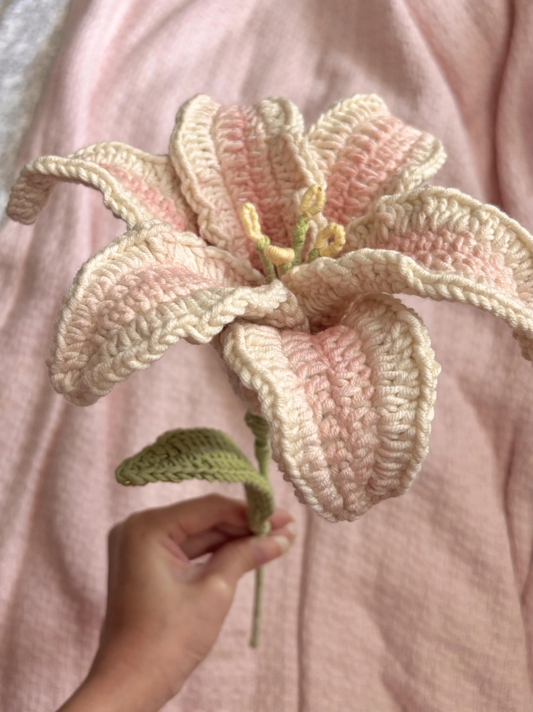

Free Crochet Pattern
How to Crochet a Realistic Lily
Bring a touch of sweet, everlasting charm to your space with this ultra-cute, beginner-friendly crochet lily pattern! With simple step-by-step instructions, you’ll love crafting soft, realistic petals, lovely little leaves, and sturdy stems for a gorgeous handmade bloom that stays pretty forever.

About the Pattern
This crochet lily pattern shows you how to create a realistic handmade flower with six shaped petals, delicate stamens, a wired stem, and a leaf. The wire gives the petals and stem structure, allowing you to gently shape the flower and create a natural-looking bloom.
Make a single lily as a sweet handmade decoration or create several to build your own everlasting crochet bouquet. This pattern is beginner-friendly and uses basic crochet stitches along with simple assembly techniques.
Video Tutorial
Prefer to crochet along with a video? Watch the full tutorial on YouTube.
Materials
- Weight 4 cotton acrylic yarn in your choice of petal colour
- Yellow yarn for the stamens
- Green yarn for the stem and leaf
- 4 mm crochet hook
- Stitch marker or bobby pin
- Scissors
- Yarn needle
- Wire
- Wooden stick
- Hot glue
- Optional: blush for shading the petals
Want to shop the materials?
Check out the materials here →Abbreviations
Written Pattern
How to Crochet the Lily
1. The Petals
Make 6 petals.
The Foundation
Start by making a slip knot and chain 25. Keep your tension gentle and relaxed.
Row 1 — Back Loops
- Turn the chain over and work into the back loops.
- Insert a sc into the 2nd stitch from the hook and mark this stitch.
- Sc in the next stitch.
- Hdc in the next 2 stitches.
- Dc in the next 14 stitches.
- Hdc in the next 3 stitches.
- Sc in the next 2 stitches.
- In the very last stitch, work 3 sc into the same stitch while rotating your work to begin the front side of the chain.
Row 1 — Front Side
- Sc in the next 2 stitches.
- Hdc in the next 3 stitches.
- Dc in the next 14 stitches.
- Hdc in the next 2 stitches.
- Sc in the next 2 stitches.
- Slst into the first marked stitch.
Adding the Wire
Place the wire along your stitches and work the following stitches while keeping the wire included.
- Work a sc increase (2 sc in one stitch).
- Hdc in the next 2 stitches.
- Dc in the next 2 stitches.
- Dc increase in the next 11 stitches.
- Hdc increase in the next 4 stitches.
- Sc increase in the next 3 stitches.
- At the tip, chain 3 and slip stitch to create a point.
Now work back along the other side.
- Sc increase in the next 3 stitches.
- Hdc increase in the next 4 stitches.
- Dc increase in the next 11 stitches.
- Dc in the next 2 stitches.
- Hdc in the next 2 stitches.
- Sc increase in the next stitch.
- Slst into the very first stitch and secure the loop over the wire.
Optional: Apply a touch of blush to the center of the petal for a soft, natural look.
2. The Stamens and Leaf
Stamens — Make 4
- Wrap yellow yarn around the top of a wire.
- Curve the end and twist it to secure the stamen.
Stems
Cover the twisted part of the stamen wires with green yarn.
Leaf
Follow the same basic pattern as the petal base, but add the wire right at the foundation base and work only until Row 1.
3. Assembly
- Stamens: Bundle the four yellow stamens together and secure them with yarn.
- The Main Stem: Use hot glue to attach the stamen bundle to a wooden stick and secure it by wrapping it with green yarn.
- Petals: Arrange the 6 petals around the centre one by one, securing them with hot glue until they sit nicely together.
- Final Touches: Wrap the base of the flower and the entire wooden stick with green yarn to cover any inconsistencies.
- Leaf: Attach the leaf to the stem as you wrap the yarn down the stick.
And that’s it—your lily is ready! Look at the incredible flower you just brought to life with your own hands; every stitch makes it uniquely yours. Display it proudly, gift it with love, and keep enjoying every bit of your creative journey!
A Little Note from Stitchy Days ♡
Hi there
Thank you so much for trying one of my crochet patterns! I’m so happy to have you here, and I hope you enjoy making this project as much as I enjoyed creating it.
If you make something using this pattern, I’d love to see it! Feel free to tag Stitchy Days when you share your finished project. Seeing your creations means so much to me as I continue growing this little crochet corner.
Thank you for supporting my work and happy crocheting! ♡
